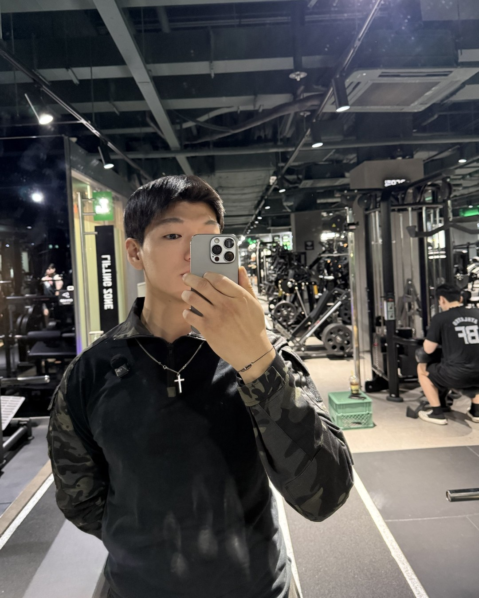
남자가 결혼을 결심하면,
묻기 시작하는 질문 4
(프러포즈보다 질문이 먼저 와요.)
1/14
@mszexc
넘겨보세요 →
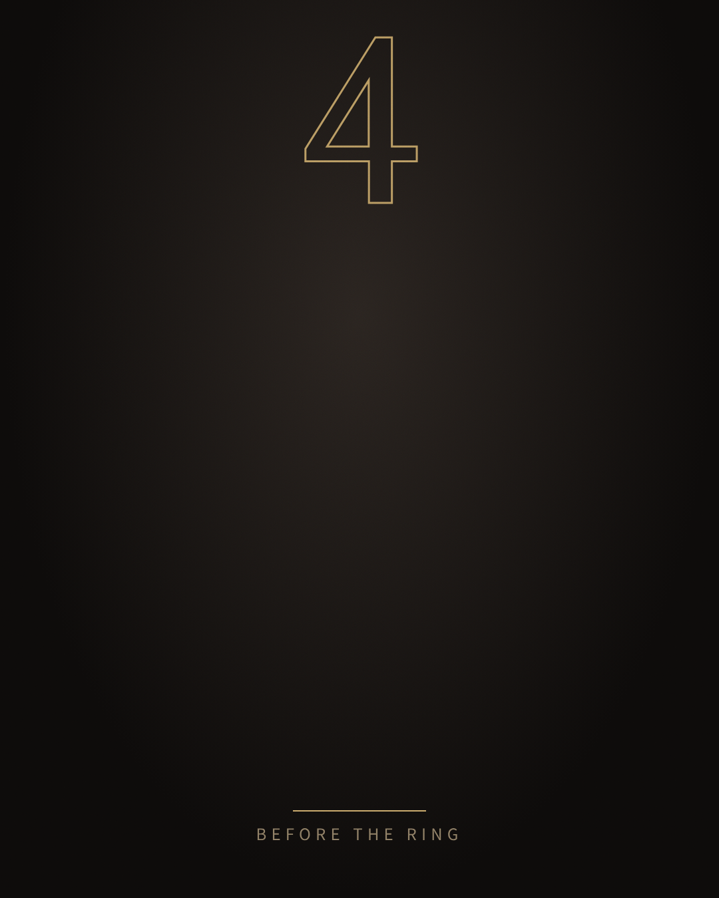
남자는 결심하면
말보다 질문이 많아져요.
(같이 살 그림을 맞춰보는 거예요.)
2/14
@mszexc
남자들끼리 하는 말 #74
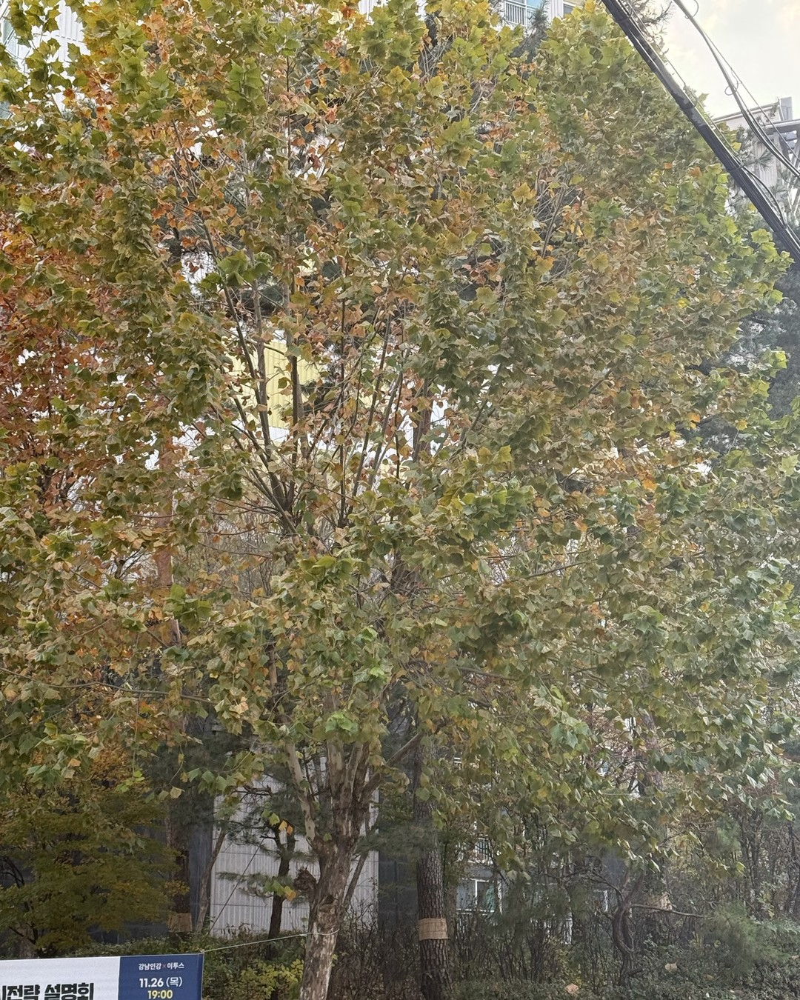
첫 번째.
"너는 아이 좋아해?"
(지나가는 말처럼 물어도, 대답은 오래 기억해요.)
3/14
@mszexc
남자들끼리 하는 말 #74
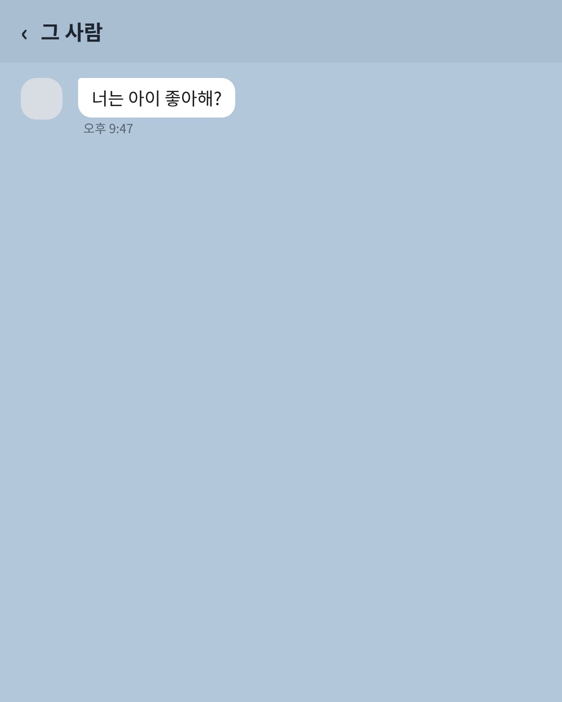
이 질문은
당신이 그리는 미래를 듣고 싶은 거예요.
(정답이 아니라 솔직한 대답이 필요해요.)
4/14
@mszexc
남자들끼리 하는 말 #74

두 번째.
"나중에 어디 살고 싶어?"
(동네 · 회사와의 거리까지 물어요.)
5/14
@mszexc
남자들끼리 하는 말 #74
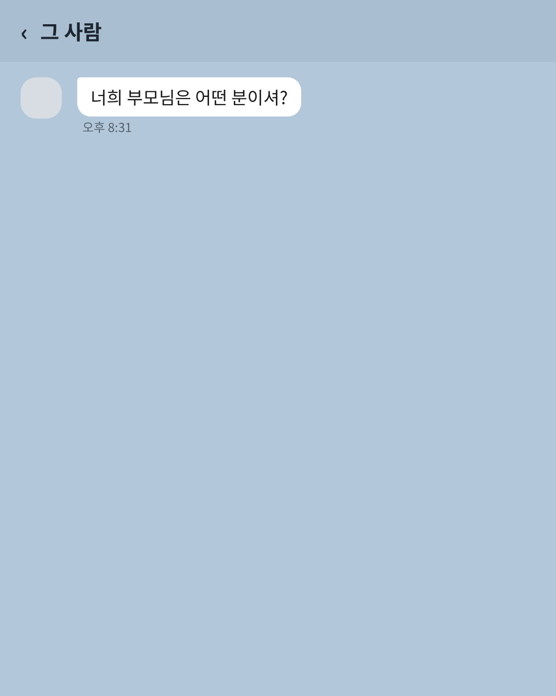
세 번째.
"너희 부모님은 어떤 분이셔?"
(인사드릴 날을 혼자 계산하고 있어요.)
6/14
@mszexc
남자들끼리 하는 말 #74
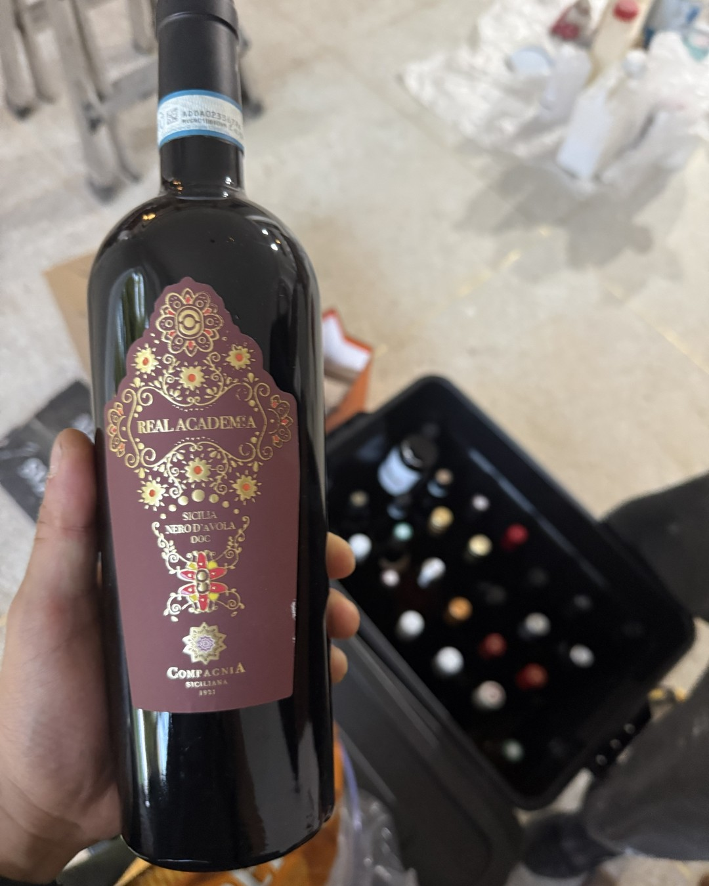
네 번째.
"너는 돈 관리 어떻게 해?"
(제일 어색하지만, 제일 진지한 질문이에요.)
7/14
@mszexc
남자들끼리 하는 말 #74
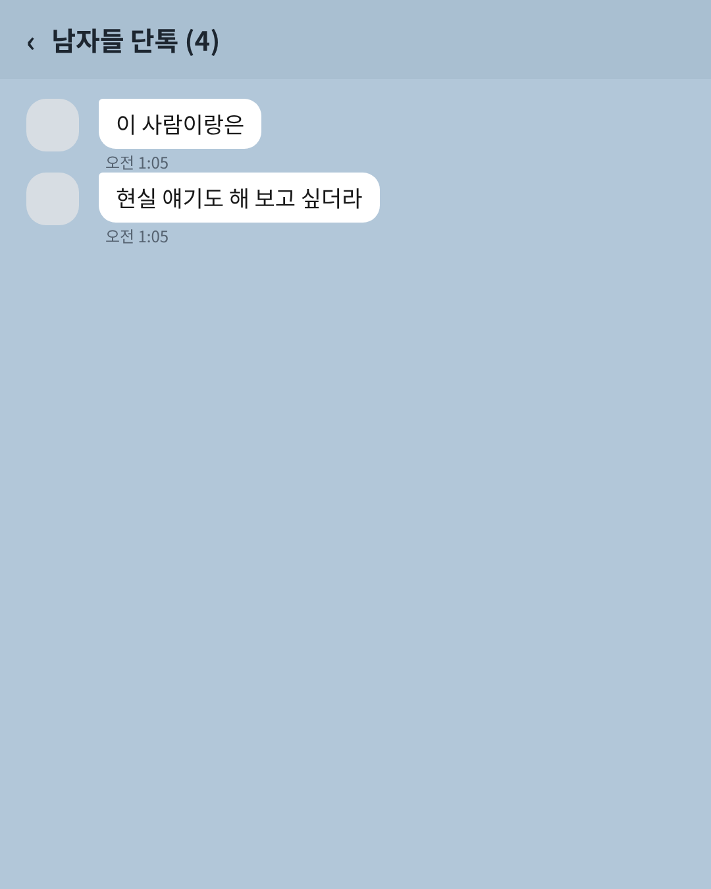
남자들끼리는 이렇게 말해요.
"이 사람이랑은 현실 얘기도 해 보고 싶더라."
(현실을 묻는 건, 현실을 같이하고 싶다는 뜻이에요.)
8/14
@mszexc
남자들끼리 하는 말 #74

반대로 결심이 없는 남자는
미래 얘기가 나오면 화제를 돌려요.
("그건 그때 가서 생각하자.")
9/14
@mszexc
남자들끼리 하는 말 #74
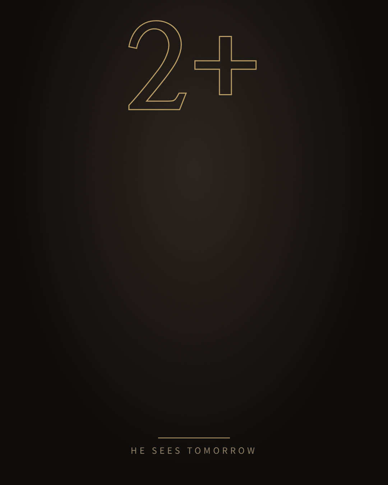
네 개 중 두 개 이상이라면
그는 이미 당신과의 내일을 그리고 있어요.
(재촉하지 않아도 돼요.)
10/14
@mszexc
남자들끼리 하는 말 #74
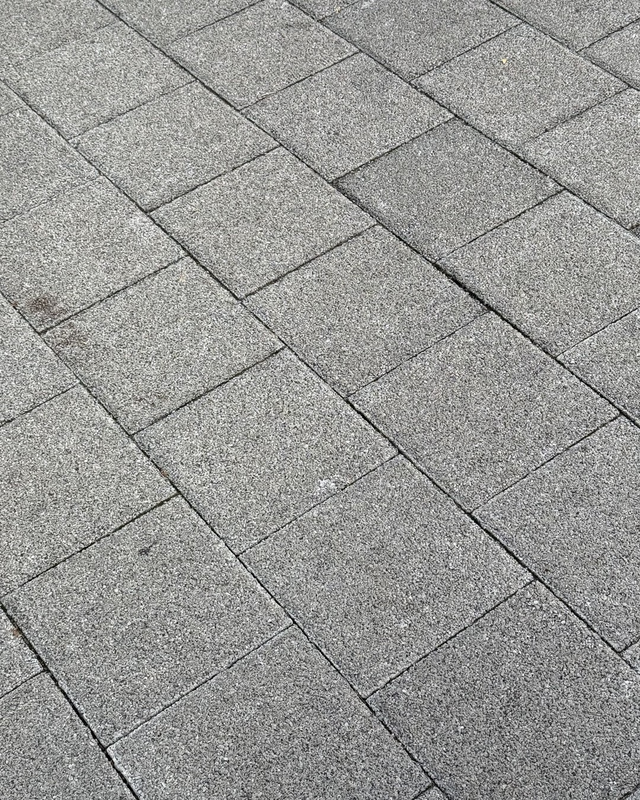
이 질문을 받으면 이렇게.
"나는 이렇게 생각해. 너는?"
(대답하고, 꼭 되물어 주세요.)
11/14
@mszexc
남자들끼리 하는 말 #74
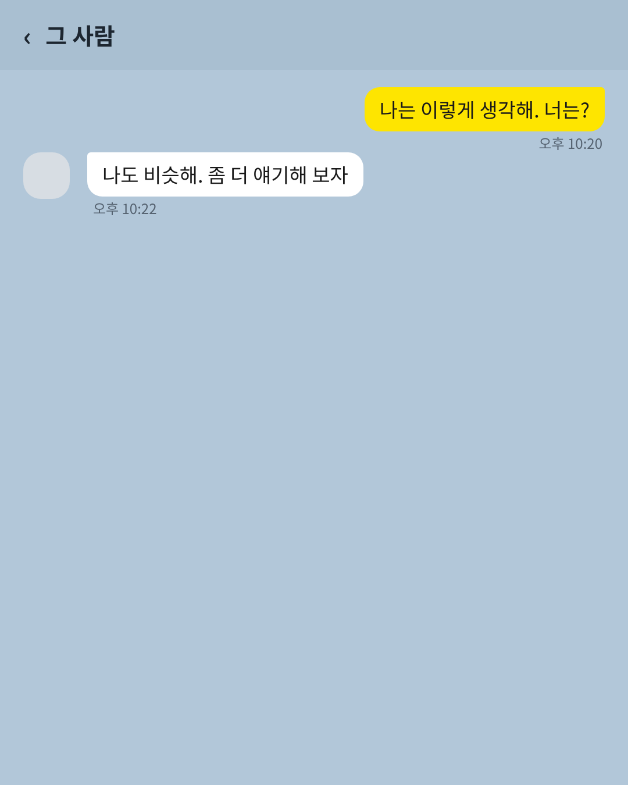
서로의 대답이 달라도
맞춰가려는 대화가 이어지면 괜찮아요.
(다른 게 아니라, 피하는 게 문제예요.)
12/14
@mszexc
남자들끼리 하는 말 #74

결혼은 반지보다
질문에서 먼저 시작돼요.
13/14
@mszexc
남자들끼리 하는 말 #74
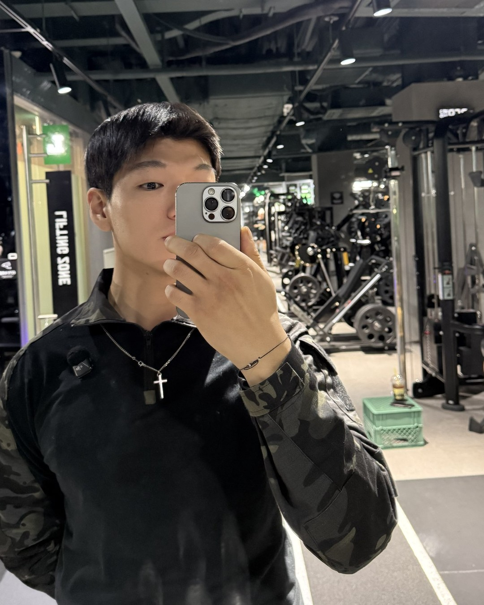
이것만 기억하세요.
현실을 묻는 남자는, 현실을 같이하고 싶은 남자예요.
남자가 하는 말의 뜻은 전자책 1·2권에 · 프로필 링크에서 무료로 받아보세요
14/14
@mszexc
남자들끼리 하는 말 #74